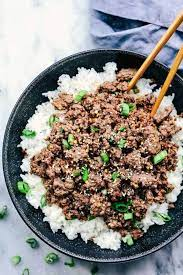

Back to the MAIN PAGE
Korean Ground Beef Bowl

Description
This right here is my boys favorite weeknight meal. They beg me to make it every week. Since we have been so busy with Lacrosse we have been having it every week. It requires minimal ingredients and requires little effort to make.
Easy, minimal ingredients, and my kids devour it. This meal became my new BFF. The ground beef takes only minutes to brown but you still get that delicious Korean flavor in this meal. The brown sugar, soy sauce, sesame oil, and ginger combination is the best.
Ingredients
- 1 pound lean ground beef
- 5 cloves garlic, crushed
- 1 tablespoon freshly grated ginger
- 2 teaspoons toasted sesame oil
- 1/2 cup reduced-sodium soy sauce
- 1/3 cup light brown sugar
- 1/4 teaspoon crushed red pepper
- 6 green onions, chopped, divided
- 4 cups hot cooked brown rice
- 1 tablespoon toasted sesame seeds
Step by Step instruction
- Heat a large skillet over medium-high heat. Add beef and cook, stirring and crumbling into small pieces until browned, 5 to 7 minutes. Drain excess grease.
- Stir in garlic, ginger, and sesame oil and cook until fragrant, about 2 minutes. Stir in soy sauce, brown sugar, and red pepper. Cook until beef absorbs some sauce, about 7 minutes. Add 1/2 of chopped green onions.
- Serve over hot cooked rice; garnish with sesame seeds and remaining green onions.